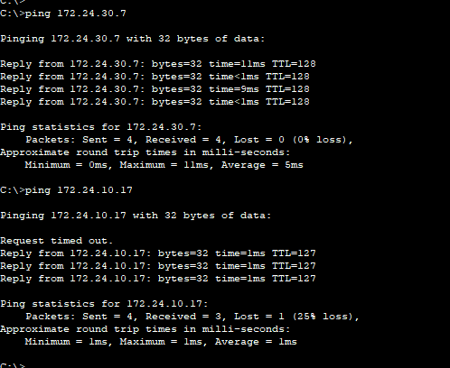
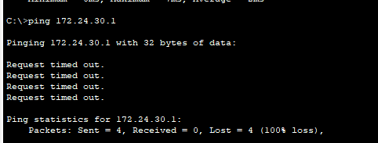
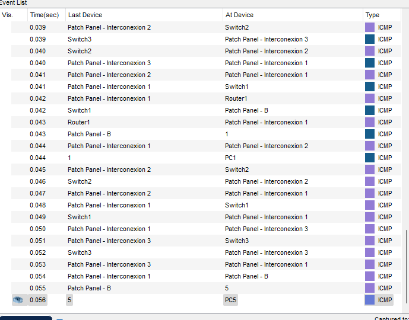
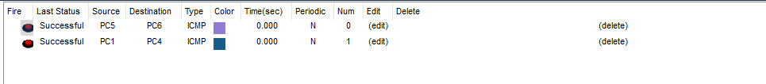

For the development of this practice, use the structured cabling of the Network Room and perform the following tasks for the logical network topology in Figure 1: 1. Mount the logical topology in the emulated network room (physical topology) in CISCO Packet Tracer. Use the CISCO 2960 Series Switch and Cisco 2811 Router models.


2.Perform the basic configuration of the CISCO switches and routers according to the procedure or list of steps proposed in the recommended readings. Manually assign each of the network interfaces the IP addresses shown in Table 1 (Where X is your workgroup number. Review the Annex section). Consider modulo 0 for the FastEthernet interfaces of the switches. 3.Verify that IP addresses have been correctly assigned to each of the PCs' NIC interfaces. Which TCP/IP command should you use? Capture the verification performed. For pc we use the ip config tab in desktop For switches we use show running-config
4.Create and configure the VLANs according to the procedure developed in class and according to the VLAN assignment shown in Table 2. 5.Verify that the VLANs have been created and configured correctly. Which CISCO command should you use? Capture the verification performed. To check vlans use show vlans
6.Verify that there is connectivity between the PCs belonging to the same VLAN. What TCP/IP commands should you use? Do the PCs have connectivity to your gateway? Because? Is there connectivity between PCs belonging to different VLANs? Why? Capture the verification performed. -Verify that there is connectivity between the PCs belonging to the same VLAN. What TCP/IP commands should you use? We use ping to ping the other pc 172.24.30.7 - Do the PCs have connectivity to your gateway? Because? A default gateway is always in the same subnet as the IP address of an interface. Default gateways are used to get out of your local subnet,gue to this a computer doesn't know how to reach the subnet there fore cant connect to the gateway -is there connectivity between PCs belonging to different VLANs? Why? Capture the verification performed. Yes there is due to the use of the router the vlans can communicate VLANs can communicate with other VLANs when they both using the same trunk link to connect to the same layer 2 switch
 7.If point 6 finds connectivity problem(s), propose and configure a solution to the problem(s) identified. Run the connectivity tests again to verify your configuration. Capture the verification performed. There was no problem with the conectivty
8.Verify that the STP protocol is configured. Which CISCO command should you use? Which switch was assigned as the root bridge? Why? Capture the verification performed. to verity spanning tree protcol we use the command "show spanning-tree" this then show all the detials about the spanning tree in the switch. the switch that was made the root bridge was switch 2 the reason behind it being that its the one that is connected to all switche working as the trunk switch and the other reason was that swtich 2 posses the lowest mac address.

9.Verify that it is possible to Telnet from one PC to the other switches and to router R1. Which TCP/IP command should you use? Capture the verification performed. i was unable to verity telnet
10.Analyze the traffic generated on the LAN by verifying connectivity from one PC to another and from one PC to the gateway. Additionally, between two PCs belonging to different VLANs. Justify your analysis using captures with the Cisco Packet Tracer simulator (simulation view). for the simulation we used pc 1 and pc 4 to check the connection between the same vlan and then we used pc 5 and 6 to check the conection between diffrent vlans. from what is seen in the simulation it is possible to communcation between the 2 scenarios as is seen in the photo where we sent a packege from pc 1 to 4 and pc 5 to 6 where both pakages went through the network and arrived and returned to there senders so it can be seen that there is comunication. though it does take a while with how many devices the data passes through as seen with the patch panels.
 